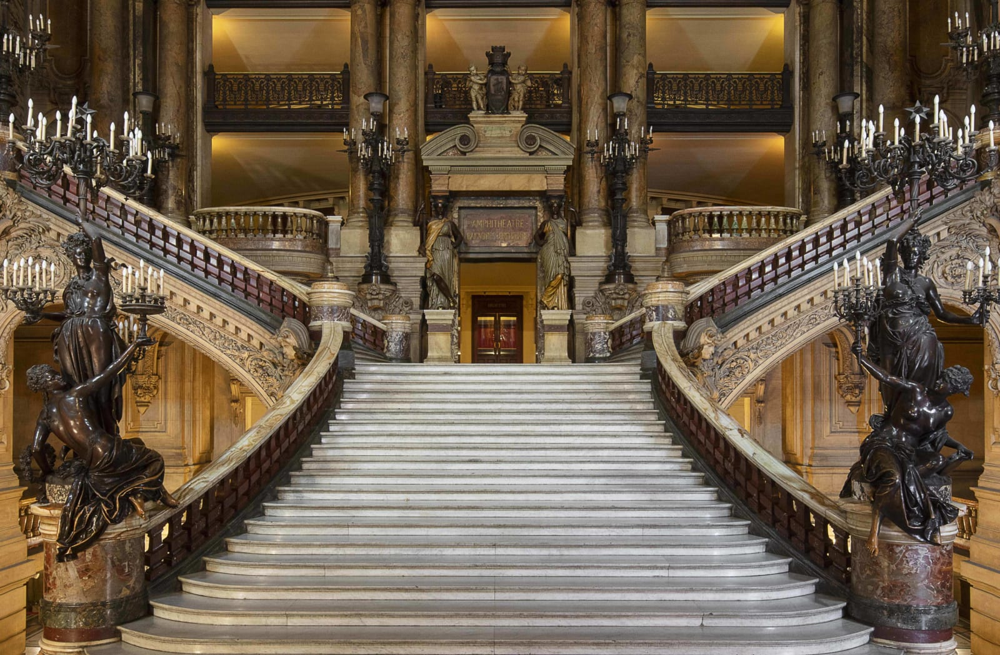
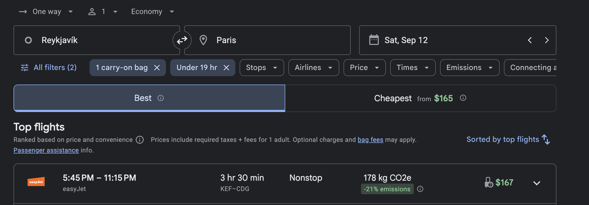
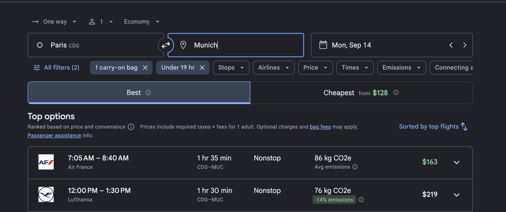

What this really buys
One complete Paris day.
The Saturday flight does not create sightseeing time: landing at 11:15 p.m. means a central hotel around 12:30–1:00 a.m. Sunday is the payoff. Monday is a transfer day, with Forsthofgut reached around 5:00–5:30 p.m.
Brief itinerary
Paris first, in four lines.
Day by day
The honest schedule.
Stay near Opéra in the 9th arrondissement for both Paris nights. It keeps Sunday walkable and avoids a hotel change after the late CDG arrival.

12Saturday · arrival
Reykjavík → Paris
Fly EasyJet KEF–CDG from 5:45–11:15 p.m. Allow about an hour for arrival formalities and bags, then use a pre-booked taxi to a 9th-arrondissement hotel. There is no planned dinner or walk: check in and sleep.
17:45 depart23:15 CDG~00:30 central ParisSleep

13Sunday · Paris
Palais Garnier + a graceful central loop
Start slowly after the late night. Reserve a late-morning or noon self-guided Palais Garnier entry, then walk to the Galeries Lafayette rooftop, through Place Vendôme and the Tuileries, and toward the Seine. Finish with an early dinner near the hotel. The opera visit is the anchor; everything after it is stroller-friendly and easy to shorten.
Late breakfastPalais Garnier 60–90mGaleries rooftopTuileries + Seine

14Monday · hotel
Paris → Munich → Forsthofgut
Leave central Paris around 8:30 a.m. for CDG. Fly Lufthansa 12:00–1:30 p.m.; allow about an hour for bags and the rental desk. Depart MUC around 2:30–3:00 and drive about 2h20 to Leogang. Keep the German rental through September 18 and use Forsthofgut’s free outdoor parking.
~08:30 leave Paris12:00 flight~14:45 car~17:15 Forsthofgut

18–19Friday–Saturday
Leogang → Munich Airport
Drive back September 18, return the car that evening and stay at Hilton Munich Airport. The September 19 departure becomes a walk from the hotel into the terminal.
~2h30 driveEvening returnHilton MUCWalk to flight
Route map
Every stop, door to door.
The map includes the late-night hotel zone, every planned Paris sight, both airports, Forsthofgut and the return to MUC.
Sunday detail map
The Paris walking loop.
This close-up separates the city stops that overlap on the Europe-wide route map. The full loop is about 3 km before any optional river wandering.
Visual booking proof
The flights you selected.
These are snapshots, not held fares. Recheck baggage, seats and exact family pricing before purchase.


Cost picture
Cheaper flights, extra city costs.
Shown base fares: $167 EasyJet plus $219 Lufthansa. EasyJet’s cheapest fare may require additional cabin or checked-bag purchases.
Current non-EEA self-guided price; children 12 and under are listed as free. Reserve a timed entry.
The main incremental cost. Prioritize 9th-arrondissement location, crib confirmation, elevator access and late reception.
Same-airport MUC return. Confirm Austria permission, enough luggage space and your own car-seat installation.